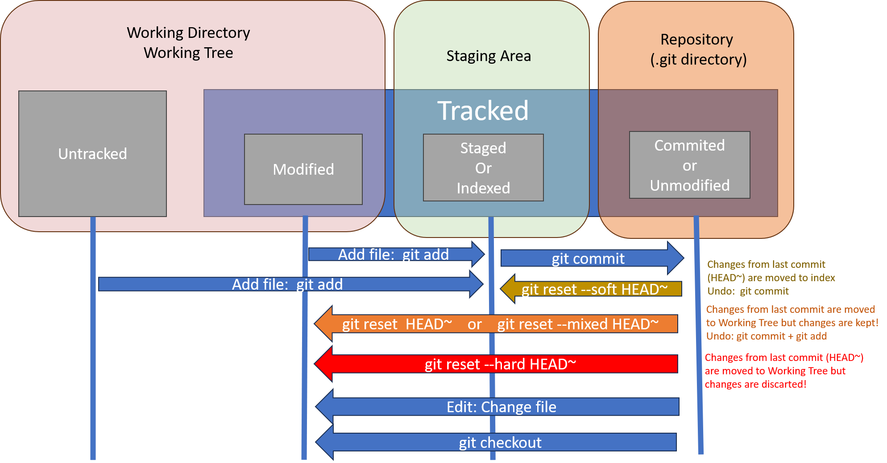

Undoing Things
Undoing changes in Git involves various commands and strategies, depending on the nature of the changes and the stage at which they are. Here is a comprehensive guide on common Git undo commands and strategies:
Summary table
of common Git undo commands and strategies:
| Action | Command | Description |
|---|---|---|
| Undoing Commits | git commit --amend |
Amend the last commit by adding new changes or modifying the commit message. |
git revert <commit-hash> |
Create a new commit that undoes changes introduced by a specific commit. | |
git rebase -i <commit-hash> |
Open an interactive rebase session, allowing you to edit, squash, or drop commits. | |
| Undoing Uncommitted Changes | git checkout -- file.txt |
Discard changes in a specific file, reverting it to the state in the last commit. |
git reset --hard |
Discard all uncommitted changes, reverting the working directory to the state of the last commit. | |
| Undoing Staged Changes | git reset file.txt |
Unstage changes in a specific file, moving them back to the working directory. |
git reset --soft HEAD^ |
Undo the last commit, keeping changes staged in the working directory. | |
git reset --mixed HEAD^ |
Undo the last commit, unstaging changes but keeping them in the working directory. | |
git reset --hard HEAD^ |
Undo the last commit, discarding changes both in the commit and the working directory. | |
| Undoing Remote Changes | git push --force origin <branch-name> |
Force push local changes to a remote branch (use with caution, as it rewrites remote history). |
| Restoring Files | git restore file.txt |
Restore the specified file to the state in the last commit (introduced in Git 2.23). |
| Rewriting history | git rebase main |
Apply any commits of the current branch ahead of the specified one. |
git filter-branch |
Rewrite branches to remove unwanted data | |
| Removing files | git rm |
Remove files |
git mv |
Rename files | |
git checkout -f [branch] |
Switch branches, discarding any local changes | |
git clean -ffd |
Erase all untracked files and directories in the working directory |
Please note that some commands, like force push and hard reset, should be used with caution, especially when collaborating with others, as they can alter Git history. Always be mindful of the consequences and potential impacts on collaborators before executing these commands.
1. Undoing Commits
git commit --amend, and git revert are all Git commands used to manipulate commit history, but they serve different purposes and are used in different scenarios.
Amend the Last Commit
git commit --amend
git commit --amend is used to modify the most recent commit by adding or changing files or the commit message. It allows you to make corrections to the most recent commit before pushing it to the remote repository. Use git commit --amend when you want to make minor adjustments to the most recent commit, such as fixing typos in the commit message or adding files that were forgotten to be included. Only amend commits that are still local and have not been pushed somewhere. Amending previously pushed commits and force pushing the branch will cause problems for your collaborators.
Reverting Commits
git revert <commit-hash>
This command creates a new commit that undoes the changes introduced by a specific commit.
git revert is used to undo the changes introduced by a specific commit by creating a new commit that undoes those changes. It's a safe way to undo commits without altering the commit history. Use git revert when you want to undo the changes introduced by a particular commit while preserving the commit history. It's useful for reverting changes that have already been shared with others or pushed to a remote repository.
Interactively Reverting or Editing Commits
For more information, check out the Git Rebase practical guide.
git rebase -i <commit-hash>
This command opens an interactive rebase session, allowing you to edit, squash, or drop commits.
The git rebase -i HEAD~6 command initiates an interactive rebase for the last six commits starting from the current HEAD. This allows you to modify, reorder, squash, or drop commits interactively before applying them onto a new base commit.
Let's break down the components of this command:
git rebase: The main command for reorganizing or combining commits.-i: Stands for "interactive," which opens an interactive rebase session.HEAD~6: Specifies the commit range to rebase. In this case, it's the last six commits from the currentHEAD.
git rebase -i HEAD~6
This command opens a text editor with a list of the last six commits in your default branch. The list might look something like this:
pick abc123 Commit message 1
pick def456 Commit message 2
pick 789ghi Commit message 3
pick jkl012 Commit message 4
pick mno345 Commit message 5
pick pqr678 Commit message 6
In the interactive rebase editor, you can choose actions for each commit:
pick: Keep the commit as is.reword: Change the commit message.edit: Pause for amending the commit.squashorfixup: Combine the commit with the previous one.drop: Remove the commit.
Squashing Commits
For example, to squash the last three commits into a single commit, you can modify the file to look like this:
pick abc123 Commit message 1
pick def456 Commit message 2
squash 789ghi Commit message 3
squash jkl012 Commit message 4
squash mno345 Commit message 5
pick pqr678 Commit message 6
After saving and closing the file, Git will prompt you to modify the commit message for the new squashed commit.
- Interactive rebasing allows you to create a cleaner and more organized commit history.
- Use
editto pause at a specific commit and make changes (e.g., amend, add files, or reword the commit message). - Always make sure to review and understand the changes you're making during an interactive rebase, as it rewrites commit history.
Interactive rebasing is a powerful but potentially risky operation. Be cautious and ensure you have a backup or a way to recover your changes if needed.
It’s important to note that these commits are listed in the opposite order than you normally see them using the log command. If you run a log, you see something like this:
git log --pretty=format:"%h %s" HEAD~6..HEAD
pqr678 Commit message 6
mno345 Commit message 5
jkl012 Commit message 4
789ghi Commit message 3
def456 Commit message 2
abc123 Commit message 1
You need to edit the script so that it stops at the commit you want to edit. To do so, change the word “pick” to the word “edit” for each of the commits you want the script to stop after.
Remember to use git rebase --continue to continue the rebase.
Reordering Commits
You can also use interactive rebases to reorder or remove commits entirely. If you want to remove commits and/or change the order in which the other two commits are introduced, you can change the rebase script.
pick def456 Commit message 2
pick abc123 Commit message 1
pick 789ghi Commit message 3
pick pqr678 Commit message 6
When you save and exit the editor, Git rewinds your branch to the parent of these commits, applies the specified commits in order, and then stops. You effectively change the order of those commits and remove commits completely.
Splitting Commits
Splitting a commit undoes a commit and then partially stages and commits as many times as commits you want to end up with. For example, suppose you want to split the middle commit of your three commits. Instead of “Commit message 2 and 3”, you want to split it into two commits: “Commit message 2” for the first, and “Commit message 3” for the second. You can do that in the rebase -i script by changing the instruction on the commit you want to split to “edit”:
pick abc123 Commit message 1
pick def456 Commit message 2 and 3
edit 789ghi Commit message 4
Then, when the script drops you to the command line, you reset that commit, take the changes that have been reset, and create multiple commits out of them. When you save and exit the editor, Git rewinds to the parent of the first commit in your list, applies the first commit (abc123), applies the second (def456), and drops you to the console. There, you can do a mixed reset of that commit with git reset HEAD^, which effectively undoes that commit and leaves the modified files unstaged. Now you can stage and commit files until you have several commits, and run git rebase --continue when you’re done.
git reset HEAD^
git add README
git commit -m 'Commit message 2'
git add file2.txt
git commit -m 'Commit message 3'
git rebase --continue
Then, git apply the third commit (def456) and you’re done. This changes the SHA-1s of the three most recent commits in your list, so make sure no changed commit shows up in that list that you’ve already pushed to a shared repository.
Deleting Commits
If you want to get rid of a commit, you can delete it using the rebase -i script. In the list of commits, put the word “drop” before the commit you want to delete (or just delete that line from the rebase script).
Because of the way Git builds commit objects, deleting or altering a commit will cause the rewriting of all the commits that follow it. The further back in your repo’s history you go, the more commits will need to be recreated. This can cause lots of merge conflicts if you have many commits later in the sequence that depend on the one you just deleted.
If you get partway through a rebase like this and decide it’s not a good idea, you can always stop. Type git rebase --abort, and your repo will be returned to the state it was in before you started the rebase.
If you finish a rebase and decide it’s not what you want, you can use git reflog to recover an earlier version of your branch.
filter-branch
There is another history-rewriting option that you can use if you need to rewrite a larger number of commits in some scriptable way — for instance, changing your email address globally or removing a file from every commit. The command is filter-branch, and it can rewrite huge swaths of your history, so you probably shouldn’t use it unless your project isn’t yet public and other people haven’t based work off the commits you’re about to rewrite. git filter-branch has many pitfalls, and is no longer the recommended way to rewrite history. Instead, consider using git-filter-repo, which is a Python script that does a better job for most applications where you would normally turn to filter-branch. Check its documentation and source code.
2. Undoing Uncommitted Changes
Discard Changes in a File
git checkout -- file.txt
This command discards changes in the specified file, reverting it to the state in the last commit. It’s important to understand that git checkout -- <file> is a dangerous command. Any local changes you made to that file are gone — Git just replaced that file with the last staged or committed version. Don’t ever use this command unless you absolutely know that you don’t want those unsaved local changes.
Discard All Changes
git reset --hard
This command discards all uncommitted changes in the working directory, reverting it to the state of the last commit.
For more details on the difference between git reset and git checkout, see the differences.
3. Undoing Staged Changes

The git reset command in Git is a powerful tool for manipulating the commit history, moving branches, and resetting the staging area. It has several options, each affecting different parts of the Git repository.
git reset --soft <commit>
Resets the current branch's HEAD to the specified commit, leaving the changes staged. Moves the HEAD pointer to the specified commit, keeping the changes from commits after that commit staged for a new commit.
git reset --soft HEAD~3
git reset --mixed <commit>
Resets the current branch's HEAD to the specified commit, unstaging the changes. This is also the default, so if you specify no option at all (just git reset HEAD~3 in this case). Moves the HEAD pointer to the specified commit, unstaging the changes from commits after that commit.
git reset --mixed HEAD~3
git reset --hard <commit>
Resets the current branch's HEAD to the specified commit, discarding all changes. Moves the HEAD pointer to the specified commit, discarding all changes made after that commit.
git reset --hard HEAD~3
Remember to use git reset with caution, especially the --hard option, as it can lead to irreversible data loss. Always make sure you understand the consequences of the reset operation before executing it.
git reset file.txt
The command git reset with a path to a file (since a commit SHA-1 or branch is not specified) is shorthand for git reset --mixed HEAD file.txt. It will:
-
Move the branch HEAD points to (skipped).
-
Make the index look like HEAD (stop here).
So it essentially just copies file.txt from HEAD to the index. This has the practical effect of unstaging the file. If we look at the diagram for that command and think about what git add does, they are exact opposites. This is why the output of the git status command suggests that you run this to unstage a file.
We could just as easily not let Git assume we meant “pull the data from HEAD” by specifying a specific commit to pull that file version from. We would just run something like:
git reset eb43bf file.txt
git reset vs git checkout
Without Paths
Running git checkout [branch] is pretty similar to running git reset --hard [branch] in that it updates all three trees for you to look like [branch], but there are two important differences.
-
Unlike git reset --hard, git checkout is working-directory safe. It tries to do a trivial merge in the working directory, so all of the files you haven’t changed will be updated. git reset --hard, on the other hand, will simply replace everything across the board without checking.
-
git checkout will move HEAD itself to point to another branch or commit, while git reset will move the branch that HEAD points to. That is why when using git checkout you may end up with a detached HEAD, which is not possible with git reset.
With Paths
The other way to run checkout is with a file path, which, like reset, does not move HEAD. It is just like git reset [branch] file in that it updates the index with that file at that commit, but it also overwrites the file in the working directory. It would be exactly like git reset --hard [branch] file (if reset would let you run that) — it’s not working-directory safe, and it does not move HEAD.
Cheat-sheet
This table shows a cheat-sheet for which commands affect which trees. The “HEAD” column reads “REF” if that command moves the reference (branch) that HEAD points to, and “HEAD” if it moves HEAD itself. Pay especial attention to the 'WD Safe?' column — if it says NO, take a second to think before running that command.
| HEAD | Index | Workdir | WD Safe? | |
|---|---|---|---|---|
| Commit Level | ||||
| reset --soft [commit] | REF | NO | NO | YES |
| reset [commit] | REF | YES | NO | YES |
| reset --hard [commit] | REF | YES | YES | NO |
| checkout |
HEAD | YES | YES | YES |
| File Level | ||||
| reset [commit] |
NO | YES | NO | YES |
| checkout [commit] |
NO | YES | YES | NO |
4. Undoing Remote Changes
- Force Push to Remote (use with caution)
git push --force origin <branch-name>
Use this command to force push local changes to a remote branch. Be cautious as it rewrites the remote history.
5. Restoring Files
The git restore command is a versatile command introduced in Git version 2.23. It is designed to restore parts of the working directory or discard changes in a way that is more explicit and flexible than some of the previous commands.
git reset VS git restore
git reset and git restore are both Git commands that deal with modifying the working directory, staging area, and commit history, but they serve slightly different purposes.
| Feature | git reset | git restore |
|---|---|---|
| Purpose | Resets the state of the repository, moving the HEAD pointer to a different commit or updating the staging area and working directory. | Restores files in the working directory to a specified state, either from the index or a commit. Designed for restoring files, either discarding changes or moving them between the working directory and staging area. |
| Syntax | git reset [--soft | --mixed | --hard] [<commit>] |
git restore [--source=<commit>] [--staged] [--worktree] <pathspec>… |
| Unmodifying a Modified File | git checkout -- <file> |
git restore <file> |
| Unstaging a Staged File | git reset <file> |
git restore --staged <file> |
| Restore Entire Working Directory | git reset --hard <commit> |
git restore --source=<commit> --worktree --staged --worktree . |
When comparing using git restore with git reset there are a few key differences to consider:
Effect on Staging Area and Working Directory:
git reset: When using git reset, you have the option to reset changes directly in the staging area and/or the working directory. However, resetting changes with git reset typically involves moving the HEAD pointer to a different commit, potentially altering the commit history.
git restore: With git restore, you explicitly specify the source of the changes you want to restore to the staging area (--staged) and/or the working directory (--worktree). This allows for more granular control over which changes are affected, without altering the commit history.
Granularity:
git reset: git reset allows you to reset changes at a commit level or a file level. You can choose to reset all changes introduced by the last commit, specific files, or even specific hunks within files.
git restore: git restore allows you to restore changes at a file or directory level. You can restore changes from a specific commit to the staging area and/or the working directory, but it doesn't provide the same level of granularity for selecting individual hunks within files.
Ease of Use:
git reset: While git reset can be powerful, it requires a bit more care and understanding, especially when choosing between --soft, --mixed, or --hard reset modes. Choosing the wrong mode can lead to unintended consequences, such as losing changes in the working directory.
git restore: git restore offers a simpler and more explicit way to restore changes to the staging area and/or the working directory. By specifying the source of the changes and the target locations, you can be more confident in the outcome.
In summary, both git reset and git restore offer a powerful tool for managing changes in the working directory and staging area. They differ in granularity, control, and ease of use. git reset offers more options but requires careful consideration of its modes, while git restore provides a simpler and more explicit approach for restoring changes.
Discard Uncommitted Changes in a File
To discard uncommitted changes in a specific file and restore it to the state in the last commit:
git restore file.txt
This command reverts the changes made to file.txt in the working directory, making it identical to the state of the file in the last commit.
Unstaged Changes in a File
To unstage changes in a file and move them back to the working directory:
git restore --staged file.txt
This command effectively undoes the staging of changes in file.txt and puts them back into the working directory. It is similar to git reset file.txt, but git restore is more explicit in this context.
Restore Entire Working Directory
To discard all uncommitted changes and restore the entire working directory to the state of the last commit:
git restore --source=<commit> --worktree --staged --worktree .
--source=<commit>: Specifies the commit from which to take the files states.--staged: Restores all changes to the staging area.--worktree: Restores all changes to the working directory.
The git restore command provides a clearer and more explicit syntax for specific use cases, making it a powerful tool for managing changes in the working directory and staging area. Always use it with care, especially when dealing with commands that modify or discard changes.
# restore working tree from HEAD content,
# without touching the index/staging area
git restore .
# restore working tree from master content,
# without touching the index/staging area
git restore -s master .
Both worktree and index could also be restored at the same time (from a tree) when both --staged and --worktree are specified. This overlaps with 'git checkout [tree] [paths]'. Specify the restore location. If neither option is specified, by default the working tree is restored. Specifying --staged will only restore the index. Specifying both restores both.
6. Rewriting history
In Git, rewriting branches, updating commits, and clearing history are common tasks that allow you to modify the commit history of a repository. These actions can be useful for cleaning up history, organizing commits, or incorporating changes from other branches. Git allows changing the order of the commits, changing messages or modifying files in a commit, squashing together or splitting apart commits, or removing commits entirely — all before you share your work with others.
git rebase [branch]
Apply any commits of the current branch ahead of the specified one.
git rebase main
main in this example) into the current branch, moving your commits to the tip of the specified branch.
git filter-branch
Rewrite branches to remove unwanted data, such as sensitive information or large files.
git filter-branch --tree-filter 'rm -f passwords.txt' HEAD
7. Removing Files
Versioning file removes and path changes
| Command | Example |
|---|---|
| git rm | git rm file.txt |
| git mv | git mv oldfile.txt newfile.txt |
| git checkout | git checkout -f feature-branch |
| git clean | git clean -ffd |
git rm
Removes files from both your working directory and the staging area. It stages the removal of the specified files, and you need to commit to apply the changes.
# Remove a file from the staging area and stage the removal
git rm -f file.txt
# Commit the removal
git commit -m "Remove file.txt"
This sequence removes file.txt from both the staging area and the working directory , and the removal is committed.
Another useful thing you may want to do is to keep the file in your working tree but remove it from your staging area.
# Remove a file from the staging area
git rm --cached file.txt
You can pass files, directories, and file-glob patterns to the git rm command. That means you can do things such as:
$ git rm log/\*.log
Note the backslash () in front of the *. This is necessary because Git does its own filename expansion in addition to your shell’s filename expansion. This command removes all files that have the .log extension in the log/ directory. Or, you can do something like this:
$ git rm \*~
This command removes all files whose names end with a ~.
git mv
Renames or moves files in both your working directory and the Git repository. Similar to git rm, it stages the rename/move, and you need to commit to apply the changes.
# Rename a file and stage the change
git mv oldfile.txt newfile.txt
# Commit the rename
git commit -m "Rename oldfile.txt to newfile.txt"
This example renames oldfile.txt to newfile.txt, stages the change, and commits the rename.
- With
git mv, you can also use it to move files to a different directory, likegit mv file.txt new_directory/. - Use
-rwithgit rmandgit mvto handle removals or moves recursively in directories.
git checkout
When switching branches, proceed even if the index or the working tree differs from HEAD, and even if there are untracked files in the way. This command is used to forcefully switch branches, discarding any local changes or untracked files that may prevent the branch switch.
git checkout -f feature-branch
git clean
Erase all untracked files and directories in the working directory. This command is used to clean up the working directory by removing any untracked files or directories that are not under version control.
git clean -ffd
-f option is used to force the clean operation, and the -d option is used to include untracked directories. There is a quirky situation where you might need to be extra forceful in asking Git to clean your working directory. If you happen to be in a working directory under which you’ve copied or cloned other Git repositories (perhaps as submodules), even git clean -fd will refuse to delete those directories. In cases like that, you need to add a second -f option for emphasis.
These commands are useful for cleaning up a Git repository before starting fresh or resolving conflicts that prevent branch switching. However, they should be used with caution, as they can permanently delete local changes and untracked files. It's essential to understand the implications of using these commands and ensure that any necessary changes or files are backed up before proceeding.
# List untracked files that will be removed (dry run)
git clean -n
# Remove untracked files
git clean -f
The command (git clean -n or git clean --dry-run) is a dry run that shows you what files would be removed. The second command (git clean -f) actually removes the untracked files.
git cleanhas additional options, such as-ifor an interactive mode where you can choose which files to clean.
The -f means 'force' or “really do this,” and is required if the Git configuration variable clean.requireForce is not explicitly set to false.
By default, the git clean command will only remove untracked files that are not ignored. Any file that matches a pattern in your .gitignore or other ignore files will not be removed. If you want to remove those files too, such as to remove all .o files generated from a build so you can do a fully clean build, you can add a -x to the clean command.